Catalog with eco-impact
Products can be filtered by category or room and searched, and prices switch between currencies instantly. Each product shows how much plastic it kept out of landfill. The cart, wishlist and dark mode are built in too, and customers can invite friends with a referral link and earn rewards.

Checkout
New users verify their email, pay through Chapa (cards, Telebirr, CBE Birr) and get an order confirmation. The order is only marked paid after the server verifies the payment.


Admin dashboard and Telegram bot
The admin manages products and orders. A Telegram bot sends a daily sales digest and answers questions from real database numbers, and the AI only words the answer without calculating anything.


Driver delivery
A dispatcher assigns orders to approved drivers on a map. Drivers update status through a one-time link, and a "delivered" claim needs the buyer's PIN plus dispatcher approval. The customer gets an email at each step.
Installable and fast
Installable on phone and desktop with separate mobile and desktop layouts. Product images are re-encoded, legacy JavaScript is trimmed and CSP headers are set.
A calmer, more modern look
The storefront was redesigned with a serif heading style, softer light and dark colours, and a clearer product page. Customers pick a colour and size with picture swatches, see live stock and the plastic diverted, and get a delivery estimate.
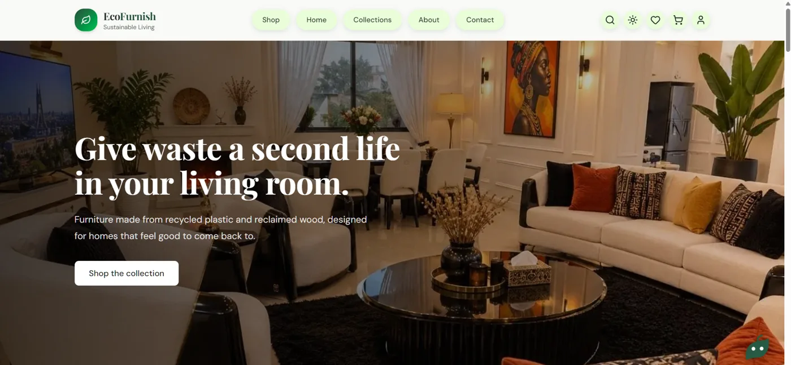
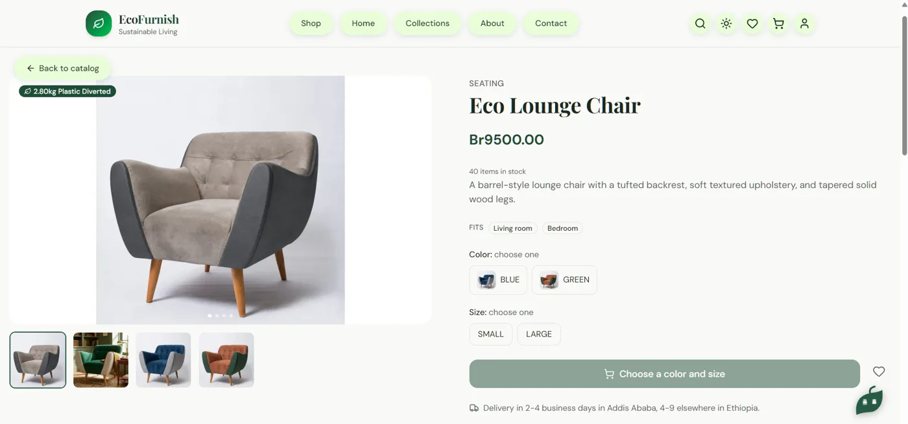
Made for phones
On mobile, products show as horizontal cards with a bottom navigation bar and a “pick up where you left off” card. The leaf assistant blinks, and phone users can swipe it off the edge of the screen to minimise it.
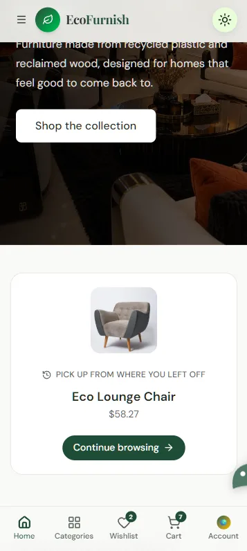
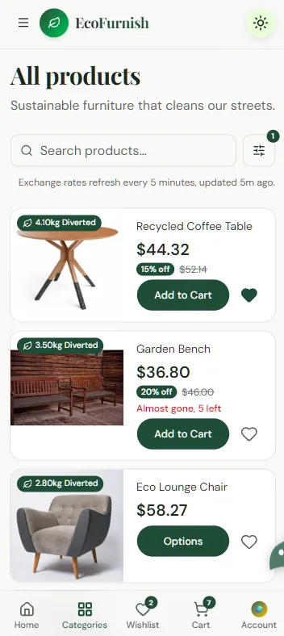
Settings and page editor for the owner
The owner can edit the wording of the legal and About pages without touching code. A settings page switches the store between real stock and demo mode, turns on a maintenance page or an announcement bar, and controls guest checkout, new reviews and new sign-ups. The chatbot, install bar, video ad, newsletter and testimonials can each be switched off.
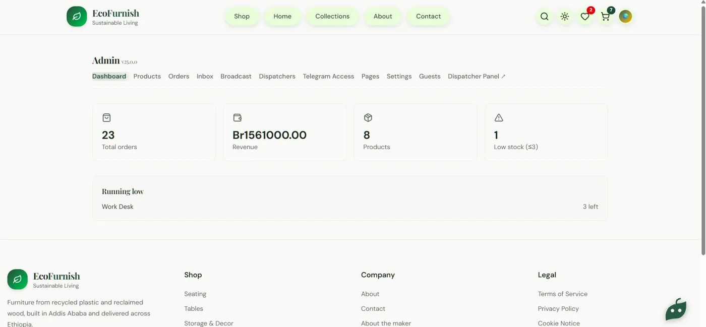
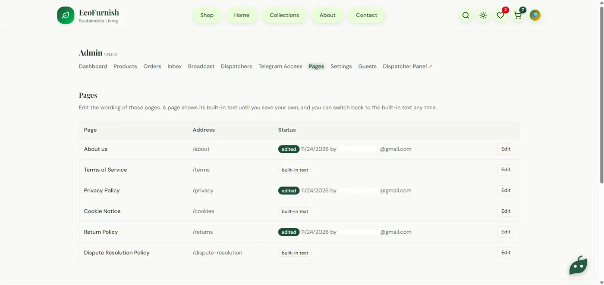
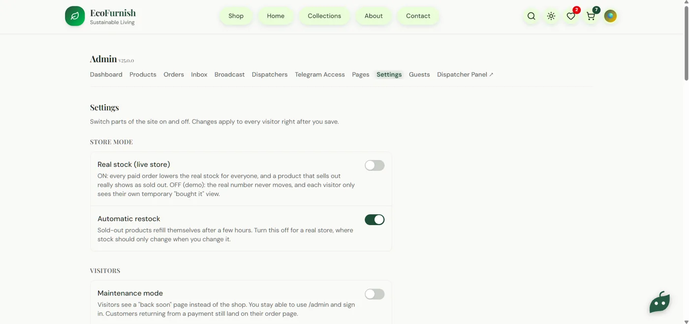
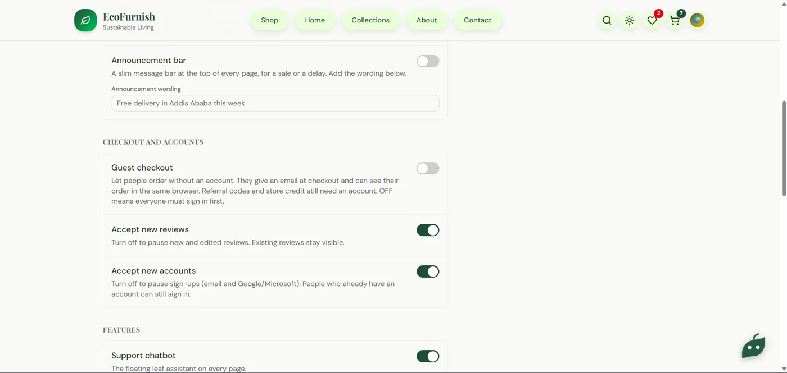
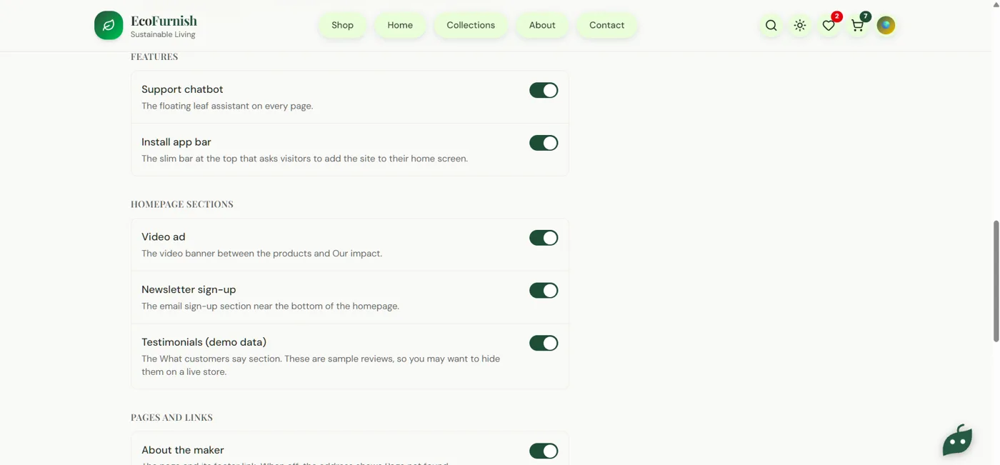
A safe guest view of the admin
Visitors can explore the admin as a temporary read-only guest. The owner picks which admin pages a guest can open, guests only see made-up sample data, and anything they try stays on their own screen. Pages that are switched off show “Page not found”, and the Dispatcher Panel is left out because it has its own separate login.
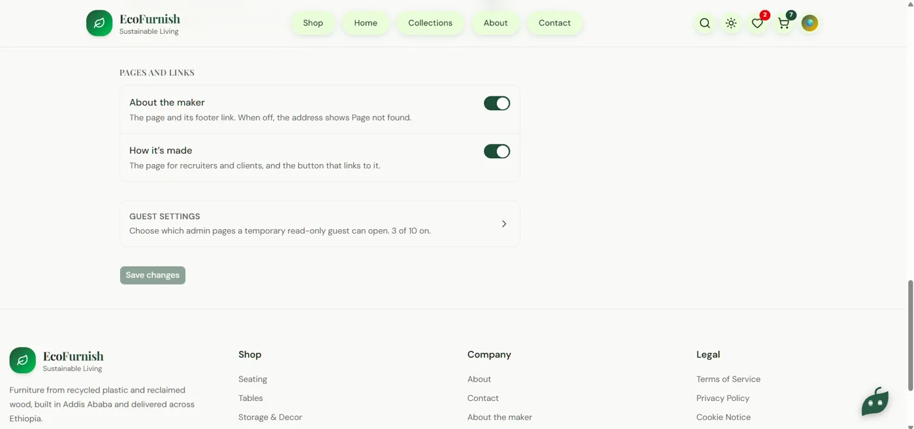
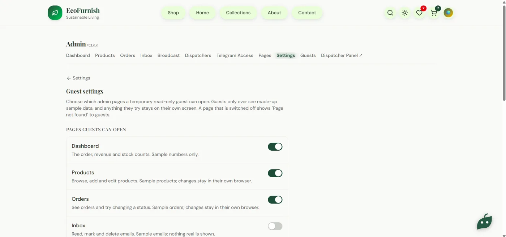
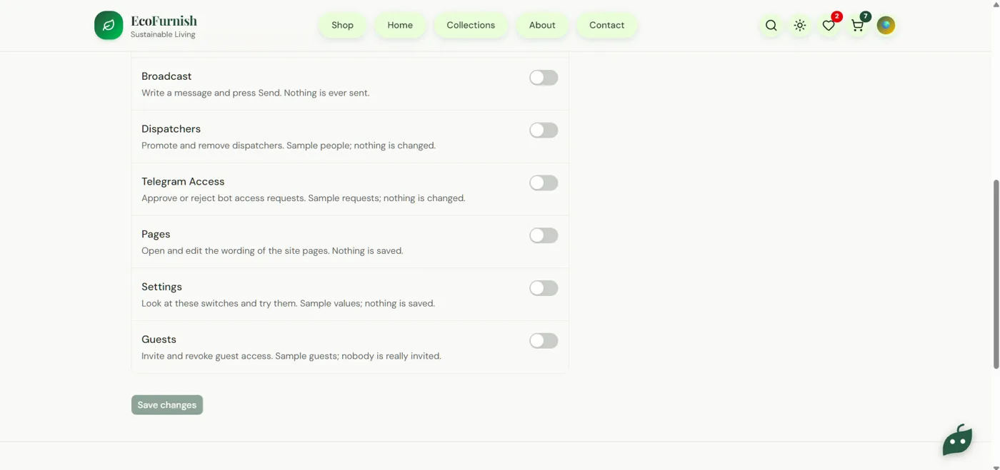
Leaf assistant on phones
A small blinking leaf sits on every page. On a phone you can drag it, or swipe it off the edge of the screen to minimise it so it peeks in. Tap it to open the chat and ask about products, delivery or ordering.
Same assistant on desktop
On a computer the assistant opens as a chat window in the corner, so customers can ask a question without leaving the product list.
Measured with PageSpeed Insights
In a recent run the home page scored 100 on mobile and 99 on desktop for performance, and 100 for accessibility, best practices and SEO on both. Scores move a little between runs, so these screenshots are from one test.
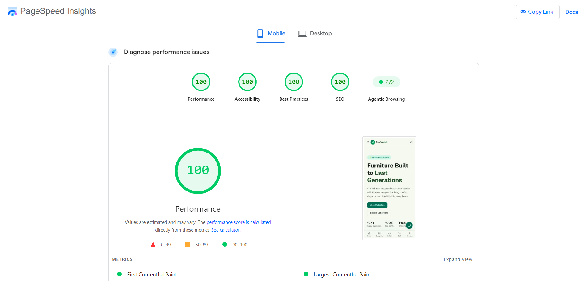
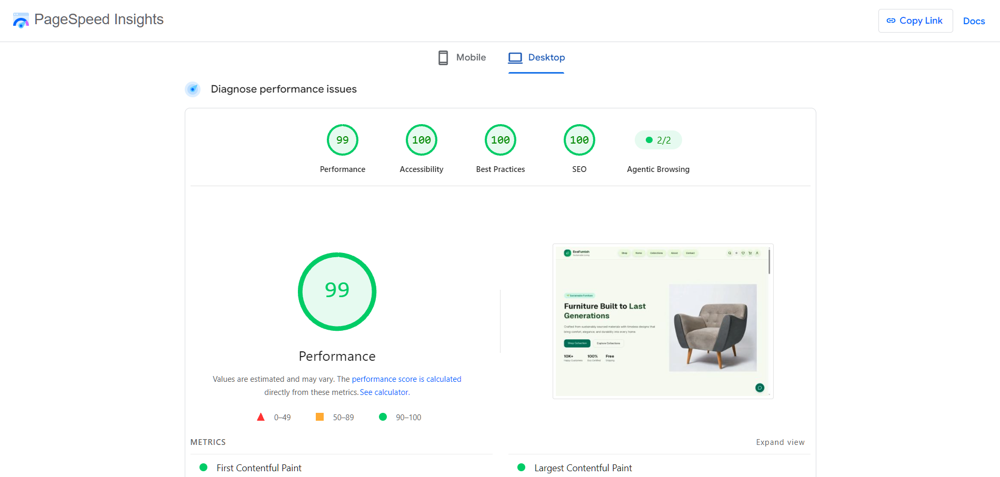
See it live
Browse the catalog, switch currencies and check the layout on your phone.
Launch EcoFurnish